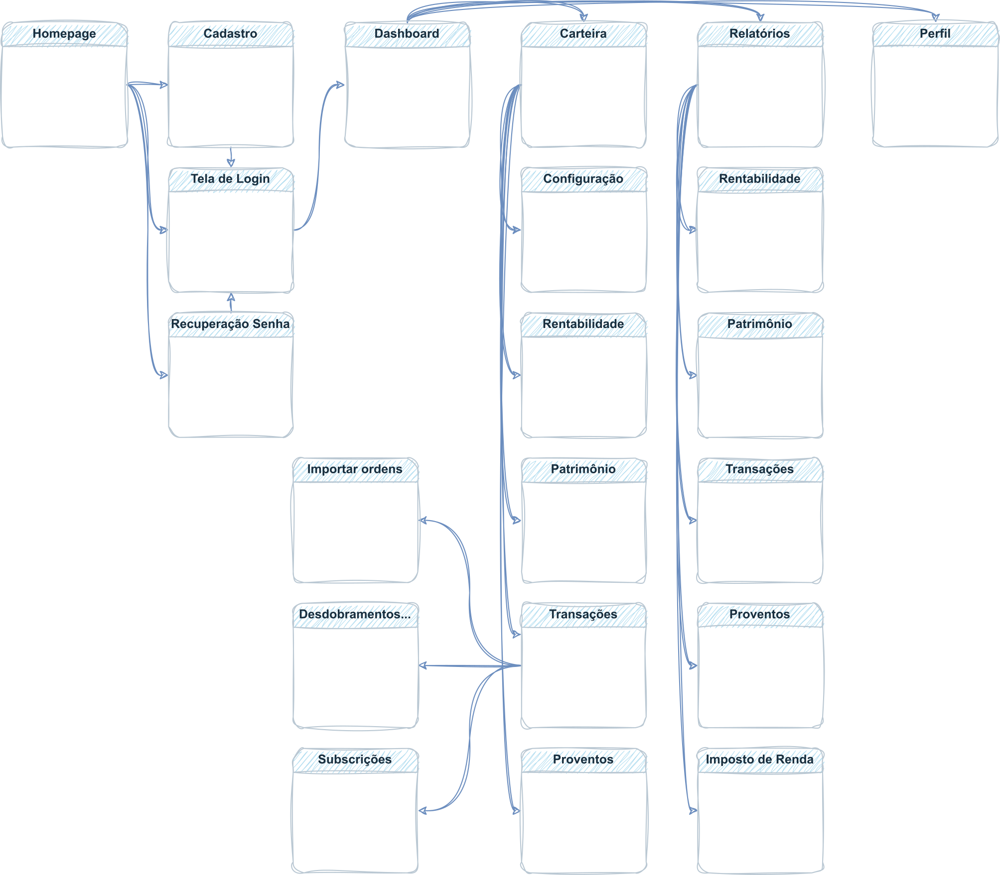
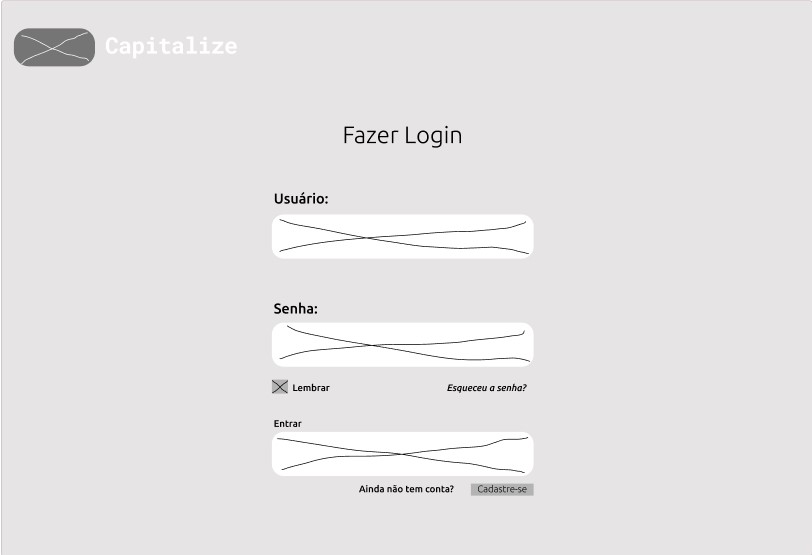
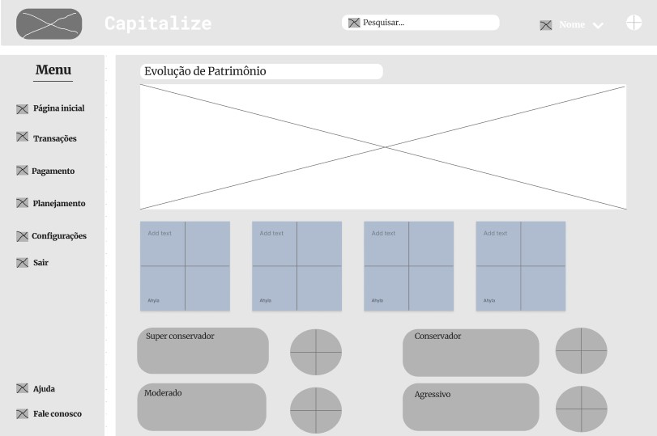

Projeto de Interface
Estamos enfatizando atributos importantes na criação da interface do sistema, como agilidade, acessibilidade e usabilidade. Como resultado, todas as telas do projeto possuem uma identidade visual consistente, projetadas para funcionar tanto em desktops quanto em dispositivos móveis.
User Flow
A figura abaixo ilustra o fluxo de interação do usuário através das telas do sistema. As telas individuais são descritas em detalhes na seção de Wireframes subsequente.

Wireframes
As telas do projeto são apresentadas e seguem uma estrutura comum, que consiste em três grandes blocos: 1. Cabeçalho - contém elementos fixos de identidade, como o logotipo, e a navegação principal do site, como o menu da aplicação. 2. Barra lateral - exibe elementos de navegação secundária à esquerda. 3. Conteúdo - apresenta o conteúdo específico da tela em questão.
Tela - Home Page
A Home Page apresenta opções de direcionamento para login e cadastro e para mais informações sobre a características do serviço, planos, FAQ e sobre a empresa (âncoras na própria Home - site One page). As telas Criar Conta, Fazer Login e Redefinir Senha, exibidas na sequência, podem ser acessadas a partir da Home.

Tela - Criar Conta

Tela - Fazer Login

Tela - Redefinir Senha

Tela - Dashboard
Após o login, o usuário é direcionado para a tela Dashboard (template de Wireframe padrão), que apresenta gráficos e informações resumidas sobre o(s) portfólio(s) do usuário. Informações mais detalhadas sobre cada item, bem como geração de relatórios dos mesmos, devem ser buscados nas páginas específicas, por meio do menu lateral.

Tela - Configurar Carteira
Teste

Tela - Configurar Carteira
Teste

Tela - Proventos
Teste

Tela - Evolução Patrimônio
Teste

Tela - Imposto de Renda
Teste

Tela - Perfil